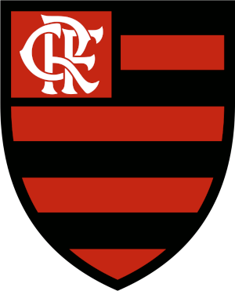

O Clube de Regatas do Flamengo é uma agremiação poliesportiva brasileira com sede na cidade do Rio de Janeiro, capital do estado de mesmo nome. Fundado no bairro do Flamengo para disputas do esporte remo em 17 de novembro de 1895, tornou-se um dos clubes mais bem-sucedidos e populares do esporte brasileiro, especialmente pelo futebol. Tem como suas cores tradicionais o vermelho e o preto e como seus maiores rivais esportivos o Vasco da Gama, o Fluminense e o Botafogo.
Dentre suas maiores glórias no futebol, destacam-se as conquistas da Copa Intercontinental (único time carioca a ter conquistado um título de dimensão mundial reconhecido pela FIFA) e das Copas Libertadores da América de 1981 e de 2019 (único time carioca a ter conquistado por duas vezes a competição, e um dos sete do Brasil a tê-la conquistado mais de uma vez), além de uma Recopa Sul-Americana, uma Copa Mercosul e uma Copa de Ouro Nicolás Leoz, o que lhe confere a quinta posição no ranking de títulos internacionais de clubes brasileiros. Em se tratando de Copa Libertadores da América o Flamengo é o quinto com maior aproveitamento na competição, além de ser o clube com o melhor desempenho considerando apenas duelos entre equipes brasileiras até 2019.
Em relação às conquistas nacionais o Flamengo é, por decisão judicial, e em seguida, pela CBF, oficialmente detentor de sete títulos do Campeonato Brasileiro (1980, 1982, 1983, 1992, 2009, 2019 e 2020) — além da controversa Copa União de 1987 —, três títulos da Copa do Brasil, duas Supercopas do Brasil e uma Copa dos Campeões. Estas quatorze conquistas dão ao clube o segundo lugar no ranking de títulos nacionais, atrás apenas do Palmeiras. Com relação a títulos regionais e estaduais, o clube conquistou um Torneio Rio-São Paulo, uma Taça dos Campeões Estaduais Rio–São Paulo e trinta e sete títulos do Campeonato Carioca e vinte e três Taça Guanabara sendo o maior vencedor das competições estaduais. Por conta destes resultados, o clube é, desde 2017, o líder nacional do Ranking Folha, que dá uma pontuação para títulos e vice-campeonatos conquistados pelas equipes, sendo, atualmente, um dos clubes brasileiros com mais conquistas no que diz respeito ao somatório de títulos reconhecidos de abrangência nacionais e internacionais, o quinto clube brasileiro (empatado com o Grêmio) no que diz respeito ao somatório de títulos reconhecidos de abrangência internacional, o segundo em abrangência nacional, e em termos estaduais, é o clube do Estado do Rio de Janeiro com o maior número de títulos oficiais no futebol, considerando títulos de todas as abrangências (internacional, nacional e regional/estadual). Possui o maior número de conquistas do Campeonato Brasileiro considerando a partir de 1971 (quando foi adotado o nome de Campeonato Nacional de Clubes), com 7 títulos (empatado com o Corinthians); contando a Copa União, já listada pela CBF em meio aos títulos brasileiros de 1983 e 1992 como conquista à parte, seria o maior campeão isoladamente. Também é o time com mais jogos na disputa: 1443 (1971 a 2021). É também, segundo um levantamento feito pela ESPN Brasil, o primeiro (e por enquanto único) clube do Brasil ter conquistado todos os títulos nacionais e internacionais possíveis, a saber: campeonato, copa e supercopa nacionais, além dos dois principais torneios continentais, a supercopa continental e o torneio intercontinental.